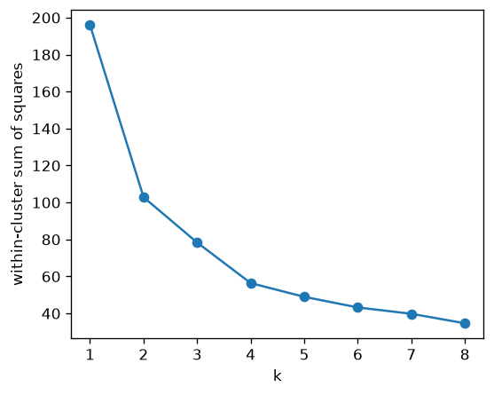
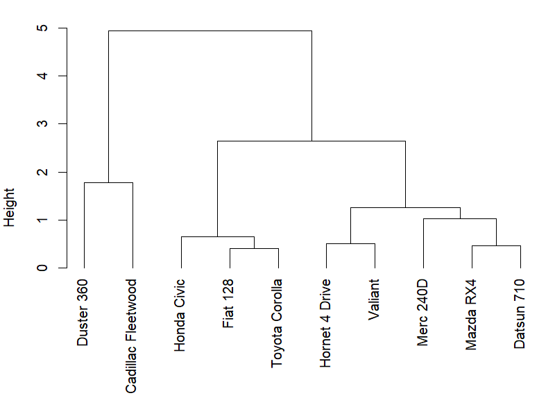

[12장] 군집 분석과 연관 분석
빅데이터개론
12장
군집 분석과 연관 분석
2027학년도 「빅데이터개론」의 준비 중인 교재입니다. 편집 상태를 검토하기 위해 미리 공개한 것으로, 수업 전에 내용과 순서가 바뀔 수 있습니다.
학사 14주차 · 교재 12 · 3부 데이터 분석 · ADsP 3과목 데이터분석 > 정형 데이터 마이닝 (군집분석, 연관분석)
군집 분석은 정답이 없는 자료에서 비슷한 개체끼리 묶고, 연관 분석은 거래 자료에서 함께 나타나는 품목의 규칙을 찾는다. 둘 다 비지도 학습이다. 시험은 거리 측도와 연결법의 구분, 덴드로그램의 판독, k-평균 군집의 절차와 특징, 지지도·신뢰도·향상도의 계산을 묻는다.
군집 분석의 자료는 8장 「다차원 척도법과 주성분 분석」의 USArrests이며, 8장이 변수(열)를 줄였다면 이 장은 50개 주(행)를 묶는다. 연관 분석은 작은 장바구니 표에서 손으로 계산하고 pandas로 확인한다.
학습 목표
- 군집 분석과 분류 분석의 차이를 설명하고, 거리 측도를 구분하며, 유클리드 거리와 맨해튼 거리를 계산한다.
- 계층적 군집의 연결법을 구분하고, 덴드로그램에서 자르는 높이에 따른 군집 수를 판독한다.
- k-평균 군집의 절차와 장단점을 설명하고, 집단 내 제곱합과 실루엣 계수로 군집 수를 판단한다.
- 혼합 분포 군집과 자기조직화 지도의 원리를 구분한다.
- 연관 규칙의 지지도, 신뢰도, 향상도를 계산하고 해석하며, Apriori 알고리즘이 후보를 줄이는 원리를 설명한다.
수업의 흐름
- 시작하기(0절): 11장을 되짚고 노트북을 연다.
- 개념과 따라 하기(1~4절): 거리와 표준화, 계층적 군집, 비계층적 군집, 연관 분석.
- 중심 실습(5절): 같은 자료를 두 방법으로 묶어 교차표로 견준다.
- R 출력 해석(6절)과 세트 12의 1~10번.
준비 사항
| 항목 | 내용 |
|---|---|
| 실습 노트북 | ADsP_12장_실습_학생용.ipynb(「따라 하기 1~4」, 「중심 실습」) |
| 자료 | USArrests.csv. 1973년 미국 50개 주의 범죄 통계이다. 장바구니 표는 노트북 안에서 만든다 |
| 앞 장과의 연계 | 8장의 표준화(같은 자료), 10장의 지도 학습과 비지도 학습, 11장의 인공신경망 |
| 실습 환경 | 부록 A |
[최신 자료 자리: 실습 환경의 라이브러리 판] 이 장의 출력은 pandas 3.0.3, scikit-learn 1.9.0, SciPy 1.18.0(2026-11-16, 교재를 쓴 컴퓨터)과 R 4.6.2로 얻었다. scikit-learn은 1.4판에서
KMeans의n_init기본값을'auto'로 바꾸었으므로 노트북은n_init=25를 직접 준다(scikit-learnKMeans문서, 2026-11-16 확인). R의arules는 CRAN에서 1.7.15판(2026-09-11 게시)이 최신이었다(2026-11-16 확인). 수업 전에 실습실의 판을 https://scikit-learn.org/stable/whats_new.html과 https://cran.r-project.org/package=arules에서 다시 확인한다.
0. 시작하기
0.1 지난 장 되짚기
11장 「분류 분석 (2): 앙상블, 인공신경망, 모형 평가」의 평가 지표는 오분류표에서 나오고, 인공신경망은 정답과의 오차를 역전파하여 학습하였다. 둘 다 정답이 있어야 한다. 이 장의 두 방법에는 정답이 없으므로 오분류표로 평가할 수 없고, 3.6절의 자기조직화 지도는 역전파를 쓰지 않는다.
0.2 자료와 노트북 열기
- 부록 A의 방법으로
ADsP_12장_실습_학생용.ipynb를 연다. 코드는 완성되어 있고# 바꾸어 볼 값이라고 적힌 줄만 고친다. - 「따라 하기 1」의 첫 코드 셀을 실행한다.
[그림 자리: 노트북의 첫 코드 셀을 실행한 화면] JupyterLab에서
ADsP_12장_실습_학생용.ipynb를 열고 「따라 하기 1」의 첫 코드 셀을 실행한 화면. 셀 왼쪽의 실행 번호[1]과 셀 아래의 출력(50, 4)및 앞 다섯 행의 표가 보이게 찍는다. 찍을 곳: 실습실 PC의 JupyterLab.
(50, 4)
Murder Assault UrbanPop Rape
State
Alabama 13.2 236 58 21.2
Alaska 10.0 263 48 44.5
Arizona 8.1 294 80 31.0
...Murder, Assault, Rape는 인구 10만 명당 살인, 폭행, 강간의 체포 건수이고, UrbanPop은 도시 인구의 비율(%)이다. “이 주는 어느 집단이다”라는 열은 없다.
- 확인 1 첫 셀의 출력에서 자료의 크기가
(50, 4)로 나왔다.
1. 군집 분석과 거리
배경과 쓰임. 군집 분석의 대표적인 공공 통계 쓰임은 지역 분류이다. 영국 통계청(ONS)은 인구 총조사의 인구 구성, 주거, 건강, 노동 시장 지표로 지방 행정 구역을 k-평균 군집으로 묶어 3단계의 지역 분류를 만들고, 이를 비슷한 지역을 찾는 데 쓰게 한다(ONS, 2021·2022년 지역 분류 방법 안내). 몇 개로 나눌지와 나눈 집단의 이름은 분석가가 결과를 보고 정한다.
[최신 자료 자리: 영국 통계청 지역 분류의 단계별 군집 수] 2021·2022년 인구 총조사에 바탕을 둔 지방 행정 구역 분류의 대상 구역 수와 단계별 군집 수. 확인할 곳: https://www.ons.gov.uk/methodology/geography/geographicalproducts/areaclassifications/2021and2022residentialbasedareaclassifications. 2026-11-16 확인 값: 374개 구역, 상위 6개 군(supergroup), 중간 19개 군(group), 하위 32개 군(subgroup). 다음 인구 총조사 뒤에 바뀔 수 있다.
1.1 군집 분석의 뜻
군집 분석은 개체들을 비슷한 것끼리 몇 개의 집단(군집)으로 나누는 방법이다. 같은 군집 안은 비슷하고 다른 군집과는 다르게 나누는 것이 목표이다.
| 구분 | 분류 분석 | 군집 분석 |
|---|---|---|
| 학습의 종류 | 지도 학습 | 비지도 학습 |
| 종속 변수 | 있다. 범주가 미리 정해져 있다 | 없다. 집단이 미리 정해져 있지 않다 |
| 결과의 평가 | 오분류표로 정답과 견준다 | 군집이 해석되는지, 방법을 바꾸어도 비슷한지를 본다 |
1.2 거리 측도
비슷한 정도는 거리(작을수록 비슷)나 유사도(클수록 비슷)로 잰다. 연속형 변수의 거리는 다음과 같으며, 오른쪽 열은 R의 dist()의 method 값이다.
| 거리 | 계산 방법 | 특징 | dist()의 method |
|---|---|---|---|
| 유클리드 거리 | 변수별 차이를 제곱하여 더한 뒤 제곱근을 구한다 | 두 점을 잇는 직선의 길이 | "euclidean"(기본값) |
| 맨해튼 거리 | 변수별 차이의 절댓값을 더한다 | 바둑판 길을 따라 걷는 거리 | "manhattan" |
| 민코프스키 거리 | 차이의 절댓값을 m제곱하여 더한 뒤 m제곱근을 구한다 | m이 1이면 맨해튼, 2이면 유클리드 거리 | "minkowski" |
| 체비셰프 거리 | 차이의 절댓값 가운데 가장 큰 값 | 가장 많이 다른 변수 하나만 본다 | "maximum" |
| 캔버라 거리 | 차이의 절댓값을 두 값의 절댓값의 합으로 나누어 더한다 | 0에 가까운 값의 차이를 크게 반영한다 | "canberra" |
| 표준화 거리 | 차이를 그 변수의 표준편차로 나눈 뒤 유클리드 거리를 구한다 | 단위와 흩어진 정도의 차이를 없앤다 | 없다. 표준화한 자료에 유클리드 거리를 쓴다 |
| 마할라노비스 거리 | 변수의 분산과 변수 사이의 공분산을 함께 반영한다 | 상관이 없으면 표준화 거리와 같다 | 없다. mahalanobis() |
앞의 다섯은 변수의 흩어진 정도를 고려하지 않고, 표준화 거리와 마할라노비스 거리는 고려한다. 마할라노비스 거리는 상관까지 반영하여 상관된 두 변수가 같은 정보를 두 번 세지 않게 한다.
범주형 자료나 항목의 유무로 된 자료에는 다음 측도를 쓴다.
| 측도 | 계산 방법 | 특징 |
|---|---|---|
| 자카드 유사도 | 두 개체가 가진 항목 집합의 교집합의 크기를 합집합의 크기로 나눈다 | 0에서 1 사이다. 1에서 뺀 값이 자카드 거리다. R의 dist()에서는 method = "binary"가 이 거리다 |
| 코사인 유사도 | 두 벡터의 내적을 두 벡터의 크기의 곱으로 나눈다 | 크기가 아니라 방향을 견준다. 방향이 같으면 1이다 |
예를 들어 {공책, 볼펜, 지우개}와 {볼펜, 지우개, 필통}의 자카드 유사도는 교집합 2 ÷ 합집합 4 = 0.5이다.
1.3 거리의 계산
두 개체 A(2, 3)과 B(5, 7)의 거리를 구한다. 변수별 차이는 3과 4이다.
| 거리 | 계산 | 값 |
|---|---|---|
| 유클리드 거리 | 3² + 4² = 25의 제곱근 | 5 |
| 맨해튼 거리 | 3 + 4 | 7 |
| 체비셰프 거리 | 3과 4 가운데 큰 값 | 4 |
같은 두 점이라도 어느 거리를 쓰느냐에 따라 값이 다르다. 맨해튼 거리 ≥ 유클리드 거리 ≥ 체비셰프 거리이다.
1.4 표준화
거리는 단위가 크고 넓게 흩어진 변수에 끌려간다(Assault의 표준편차 83.34, Murder 4.36). 그래서 군집 분석 전에 변수마다 평균을 빼고 표준편차(R의 scale()과 같이 n - 1)로 나누어 표준화한다. 이 장의 군집 분석은 모두 표준화한 자료 Z로 한다. 단위가 같고 흩어진 정도의 차이 자체가 뜻을 가지면 표준화하지 않을 수 있다.
따라 하기 1. 거리와 표준화
노트북의 「따라 하기 1. 거리와 표준화」를 차례로 실행한다.
예상. (1) 표준화하기 전에 앨라배마와 알래스카의 유클리드 거리를 가장 크게 만든 변수는 무엇인가. (2) 표준화한 뒤에도 그 변수가 가장 큰 몫을 차지하는가.
실행과 결과.
기술 통계의
std행과 1.3절의 두 점 A와 B의 세 거리를 읽는다.Murder Assault UrbanPop Rape mean 7.79 170.76 65.54 21.23 std 4.36 83.34 14.47 9.375.0 7 4앨라배마와 알래스카의 차이의 제곱과 두 거리를 원래 값으로 구한다.
Murder 10.24 Assault 729.00 UrbanPop 100.00 Rape 542.89 dtype: float64 37.177 63.5- 확인 2
Assault의 차이의 제곱이 729.00으로 가장 크고, 유클리드 거리가 37.177로 나왔다.
- 확인 2
표준화한 자료로 같은 두 주의 거리를 다시 구한다.
Murder 0.540 Assault 0.105 UrbanPop 0.477 Rape 6.188 dtype: float64 2.704 4.237- 확인 3 표준화한 뒤 차이의 제곱이 가장 큰 변수가
Rape(6.188)로 바뀌었고, 유클리드 거리가 2.704로 나왔다.
- 확인 3 표준화한 뒤 차이의 제곱이 가장 큰 변수가
해석과 복기. 폭행 건수의 차이 27건은 표준편차 83.34에 비하면 작고, 강간 건수의 차이 23.3건은 표준편차 9.37의 두 배를 넘는다. 표준화는 단위를 같게 할 뿐 네 변수의 몫을 같게 만들지는 않는다.
2. 계층적 군집
배경과 쓰임. 계층적 군집은 묶은 기록 전체를 남기므로 덴드로그램 한 장에서 여러 군집 수의 결과를 읽을 수 있어 탐색 단계에 쓴다. 모든 개체 쌍의 거리를 구하므로 개체가 많지 않을 때 쓴다. R은 hclust(), 파이썬은 SciPy의 linkage()로 실행한다(R 매뉴얼 hclust, SciPy linkage 문서).
2.1 병합적 방법과 분할적 방법
병합적 방법은 개체 하나하나를 군집으로 놓고 가장 가까운 두 군집을 합치는 일을 되풀이하여 전체가 한 군집이 되면 멈춘다. 분할적 방법은 전체를 한 군집으로 놓고 둘로 나누는 일을 되풀이한다. 병합적 방법에서 개체가 n개이면 병합은 n - 1번 일어난다. 군집 수를 미리 정하지 않으며, 한번 묶인 개체는 다시 갈라지지 않는다.
2.2 연결법
개체가 여럿 든 두 군집 사이의 거리를 정하는 방법이 연결법이다.
| 연결법 | 두 군집 사이의 거리 | 특징 |
|---|---|---|
| 최단 연결법 (단일 연결법) | 두 군집에서 하나씩 고른 개체 쌍의 거리 가운데 가장 작은 값 | 개체가 사슬처럼 길게 이어진 군집이 생기기 쉽다. 군집의 크기가 고르지 않게 나온다 |
| 최장 연결법 (완전 연결법) | 개체 쌍의 거리 가운데 가장 큰 값 | 군집 안의 개체가 서로 가깝게 모인다. 이상값의 영향을 받는다. R의 hclust()의 기본값이다 |
| 평균 연결법 | 모든 개체 쌍의 거리의 평균 | 최단 연결법과 최장 연결법의 중간 성격이다 |
| 중심 연결법 | 두 군집의 중심(변수별 평균) 사이의 거리 | 군집을 합치면 중심을 개체 수로 가중 평균하여 다시 구한다 |
| 와드 연결법 | 두 군집을 합쳤을 때 군집 내 오차 제곱합이 늘어나는 양 | 그 양이 가장 작은 두 군집을 합친다. 크기가 비슷하고 둥글게 모인 군집이 만들어지는 경향이 있다 |
앞의 넷은 거리에, 와드 연결법은 오차 제곱합에 바탕을 둔다. scikit-learn의 군집 안내서도 크기가 가장 고르지 않은 것을 최단 연결법, 가장 고른 것을 와드 연결법으로 설명한다.
[그림 자리: 연결법별 두 군집 사이의 거리의 개념도] 평면 위에 개체 둘씩 든 군집 P = {a, b}와 Q = {c, d}를 그리고, 네 개의 작은 그림으로 나란히 보인다. (1) 최단 연결법: 가장 가까운 쌍 a–c 한 선만 굵게. (2) 최장 연결법: 가장 먼 쌍 b–d 한 선만 굵게. (3) 평균 연결법: 네 쌍 a–c, a–d, b–c, b–d를 모두 가는 선으로. (4) 중심 연결법: 두 군집의 중심을 × 표로 찍고 두 중심을 잇는 선. 그림 안의 글자는 영문(single, complete, average, centroid)으로 쓴다. 만들 곳: 도식 편집기 또는 matplotlib.
군집 P = {a, b}와 Q = {c, d}에서 개체 쌍의 거리가 a와 c 2, a와 d 5, b와 c 4, b와 d 7이면 두 군집의 거리는 다음과 같다.
| 연결법 | 계산 | 값 |
|---|---|---|
| 최단 연결법 | 2, 5, 4, 7 가운데 가장 작은 값 | 2 |
| 최장 연결법 | 2, 5, 4, 7 가운데 가장 큰 값 | 7 |
| 평균 연결법 | (2 + 5 + 4 + 7) ÷ 4 | 4.5 |
2.3 덴드로그램
덴드로그램은 계층적 군집의 병합 과정을 나무 모양으로 그린 그림이다. 다음은 표준화한 USArrests를 와드 연결법으로 묶은 것이다.

- 가로축에는 개체가, 세로축에는 병합이 일어난 높이(합쳐진 두 군집 사이의 거리)가 놓인다.
- 어떤 높이에 가로선을 그으면, 그 선과 만나는 세로선의 수가 군집 수이다.
- 병합 높이가 크게 뛰는 구간에서 자르면 서로 멀리 떨어진 군집을 얻는다.
- 가로축에서 이웃한 두 개체가 반드시 가까운 것은 아니다. 처음 이어지는 가로선의 높이로 읽는다.
마지막 다섯 번의 병합 높이는 3.496, 3.734, 6.462, 7.188, 13.516이다.
| 자르는 높이 | 군집 수 |
|---|---|
| 7.188과 13.516 사이 | 2 |
| 6.462와 7.188 사이 | 3 |
| 3.734와 6.462 사이 | 4 |
| 3.496과 3.734 사이 | 5 |
높이가 7.188에서 13.516으로 가장 크게 뛰므로 가장 뚜렷한 구분은 군집 2개이고, 3.734에서 6.462로도 크게 뛰므로 군집 4개도 자연스럽다. 개체가 n개이고 자르는 높이보다 낮은 병합이 m번이면 군집 수는 n - m이다. 점선의 높이 5.098보다 낮은 병합은 46번이므로 군집 수는 50 - 46 = 4이다. 군집의 번호는 이름표일 뿐이며, 군집의 성격은 표준화하기 전의 값으로 구한 군집별 평균으로 읽는다.
따라 하기 2. 계층적 군집과 덴드로그램
노트북의 「따라 하기 2. 계층적 군집과 덴드로그램」을 차례로 실행한다.
예상. (1) 주가 50개이면 병합 기록은 몇 줄인가. (2) 높이 10에서 자르면 군집은 몇 개인가.
실행과 결과.
와드 연결법의 병합 기록의 크기와 마지막 다섯 번의 병합 높이, 앞 다섯 줄을 본다.
(49, 4) [ 3.496 3.734 6.462 7.188 13.516][[14. 28. 0.206 2. ] [12. 31. 0.35 2. ] [13. 15. 0.429 2. ] [22. 48. 0.494 2. ] [19. 30. 0.535 2. ]] Iowa New Hampshire 0.206한 줄이 병합 한 번이며, 차례로 두 번호(0부터 센 행 번호, 50 이상이면 앞 단계의 군집), 높이, 개체 수이다. 가장 먼저 묶인 것은
Iowa와New Hampshire(0.206)이다.군집 4개로 자르는 높이, 군집의 크기, 원래 값의 군집별 평균을 본다.
5.098 ... hc 1 7 2 12 3 12 4 19 Name: count, dtype: int64 Murder Assault UrbanPop Rape hc 1 14.7 251.3 54.3 21.7 2 11.0 264.0 76.5 33.6 3 3.1 76.0 52.1 11.8 4 6.2 142.1 71.3 19.2- 확인 4 병합 기록이 49줄이고, 군집 4개로 자르는 높이가 5.098, 네 군집의 크기가 7, 12, 12, 19로 나왔다.
군집의 수 대신 높이 10을 주어 자른다.
1 19 2 31 Name: count, dtype: int64
해석과 복기. 병합 기록은 50 - 1 = 49줄이고, 높이 10은 7.188과 13.516 사이이므로 군집이 2개이다. 군집별 평균을 전체 평균과 견주면 1번은 “도시화가 덜 된, 살인이 많은 주”, 2번은 “도시화가 많이 된, 폭력 범죄가 많은 주”, 3번은 “범죄가 적은 주”, 4번은 “도시화가 많이 된, 범죄가 평균 수준인 주”로 부를 수 있다. 이름은 분석가가 붙인다. 군집 수로 자르기와 높이로 자르기는 R의 cutree()의 k와 h에 해당한다.
3. 비계층적 군집
배경과 쓰임. k-평균 군집은 개체가 많아도 계산이 빠르므로 대규모 자료에 가장 널리 쓴다. 1절의 영국 통계청 지역 분류는 k-평균 군집으로 얻은 각 군을 다시 k-평균 군집으로 나누어 3단계를 만들었다. R은 kmeans(), 파이썬은 scikit-learn의 KMeans로 실행하며, 두 함수 모두 각 개체에서 자기 군집의 중심까지 거리의 제곱을 더한 값을 줄인다(R 매뉴얼 kmeans, scikit-learn KMeans 문서).
3.1 k-평균 군집의 절차
- 초기 중심: 군집의 중심 k개를 임의로 정한다.
- 배정: 개체마다 가장 가까운 중심을 찾아 그 군집에 넣는다.
- 중심 갱신: 군집마다 속한 개체의 평균을 구해 새 중심으로 삼는다.
- 반복: 배정이 더 바뀌지 않을 때까지 2와 3을 되풀이한다.
[그림 자리: k-평균 군집의 반복 과정] 평면 위의 점 20개 안팎과 군집 3개로, 네 칸을 가로로 늘어놓은 도식. (1) 임의의 초기 중심 세 개(× 표). (2) 점마다 가장 가까운 중심의 색으로 칠한 배정. (3) 색별 평균으로 옮겨 간 새 중심과, 옛 중심에서 새 중심으로 그은 화살표. (4) 배정이 더 바뀌지 않은 마지막 상태. 칸의 제목은 영문(initial centers, assign, update, converged)으로 쓴다. 만들 곳: matplotlib(난수 시드 고정).
값 다섯 개(1, 2, 6, 7, 10)를 초기 중심 1과 2에서 군집 2개로 나눈다.
| 단계 | 중심 | 배정 |
|---|---|---|
| 처음 | 1, 2 | {1}, {2, 6, 7, 10} |
| 1회 갱신 | 1, 6.25 | {1, 2}, {6, 7, 10} |
| 2회 갱신 | 1.5, 7.667 | {1, 2}, {6, 7, 10} |
계층적 군집과 달리 개체(값 2)가 군집을 옮긴다.
k-평균 군집은 집단 내 제곱합(개체마다 자기 군집의 중심까지의 거리를 제곱하여 더한 값)을 줄인다. 반복은 언제나 멈추지만 멈춘 곳이 가장 작은 값이라는 보장은 없다(지역 최적해). 그래서 초기 중심을 여러 번 바꾸어 실행하고 가장 좋은 결과를 고른다(R의 nstart, scikit-learn의 n_init).
| 장점 | 단점 |
|---|---|
| 절차가 단순하고 계산이 빠르다. 개체가 많은 자료에도 쓸 수 있다 | 군집 수 k를 미리 정해야 한다 |
| 개체가 반복 과정에서 다른 군집으로 옮길 수 있다 | 초기 중심에 따라 결과가 달라질 수 있다 |
| 종속 변수 없이 자료의 구조를 찾는다 | 평균을 쓰므로 이상값에 민감하다 |
| 둥글게 모이지 않은 모양의 군집은 잘 찾지 못한다 |
이상값의 문제에는 평균 대신 중앙값을 쓰는 k-중앙값 군집이나 실제 개체를 중심으로 쓰는 PAM(k-medoids)을 쓴다.
3.2 k-평균 군집의 결과
표준화한 자료를 군집 4개로 묶으면 크기는 13, 16, 13, 8이다(파이썬은 번호를 0부터 붙인다). 군집의 중심은 표준화한 값의 군집별 평균이다.
Murder Assault UrbanPop Rape
0 0.695 1.039 0.723 1.277
1 -0.489 -0.383 0.576 -0.262
2 -0.962 -1.107 -0.930 -0.967
3 1.412 0.874 -0.815 0.0190번 군집은 네 변수가 모두 평균보다 크고 2번 군집은 모두 작다.
집단 내 제곱합의 합계(inertia_)는 56.403, 전체 제곱합은 196.0이다. 전체 제곱합 = 집단 내 제곱합 + 군집 사이의 제곱합이며, 군집 사이의 몫(71.2%)이 클수록 군집이 잘 떨어져 있다.
3.3 계층적 군집과의 비교
두 방법의 결과를 교차표로 견준다. 행은 계층적 군집, 열은 k-평균 군집의 번호이다.
km 0 1 2 3
hc
1 0 0 0 7
2 12 0 0 0
3 0 0 12 0
4 1 16 1 1번호는 맞지 않으나 계층적 군집의 1·2·3번은 k-평균에서도 각각 한 군집에 모였고, 4번의 19개 주 가운데 3개 주만 흩어졌다. 행마다 가장 큰 값의 합 47개 주가 같게 묶였다. 와드 연결법과 k-평균 군집이 모두 군집 안의 제곱합을 작게 하므로 결과가 비슷하다.
3.4 군집 수의 결정

집단 내 제곱합은 군집 수를 늘리면 언제나 줄어드므로, 줄어드는 폭이 갑자기 작아지는 곳(팔꿈치)을 고른다.
실루엣 계수는 개체마다 a(같은 군집의 다른 개체들까지의 평균 거리)와 b(가장 가까운 다른 군집의 개체들까지의 평균 거리)로 구한다.
실루엣 계수 = (b - a) ÷ (a와 b 가운데 큰 값)
-1에서 1 사이이며, 1에 가까우면 잘 배정된 것, 음수이면 잘못 배정되었을 수 있다(예: a 1.2, b 2.0이면 0.4). 평균 실루엣 계수는 군집 수를 늘린다고 커지지 않으므로 군집 수가 다른 결과를 견줄 수 있다.
3.5 혼합 분포 군집
혼합 분포 군집은 자료가 k개의 확률 분포(흔히 정규 분포)가 섞인 모집단에서 나왔다고 보고 분포 하나를 군집 하나로 삼아, 모수(평균과 분산)와 섞인 비율을 EM 알고리즘으로 추정한다.
| 단계 | 하는 일 |
|---|---|
| E 단계 (기댓값 단계) | 지금의 모수 추정값을 써서, 개체마다 각 분포(군집)에 속할 확률을 계산한다 |
| M 단계 (최대화 단계) | E 단계에서 구한 확률을 써서, 가능도가 가장 커지도록 모수를 다시 추정한다 |
| 구분 | k-평균 군집 | 혼합 분포 군집 |
|---|---|---|
| 개체의 배정 | 가장 가까운 중심의 군집 하나에 넣는다 | 각 군집에 속할 확률을 준다 |
| 군집의 모양 | 둥근 모양 | 분산(공분산)에 따라 길쭉한 모양도 표현한다 |
| 같은 점 | 군집 수를 미리 정한다. 초깃값에 따라 결과가 달라질 수 있다. 이상값에 민감하다 |
3.6 자기조직화 지도
자기조직화 지도(SOM)는 코호넨(Kohonen)이 제안한 비지도 학습의 인공신경망으로, 고차원 자료를 낮은 차원(흔히 2차원)의 격자 위에 비슷한 개체끼리 가깝게 배치하므로 그림으로 보기 좋다.
| 구성 | 내용 |
|---|---|
| 입력층 | 입력 변수의 수만큼 마디(뉴런)가 있다 |
| 경쟁층 | 마디가 2차원 격자로 놓여 있다. 마디마다 입력과 같은 길이의 연결 강도 벡터를 가진다. 군집은 이 층에 만들어진다 |
입력과 가장 가까운 경쟁층의 마디가 승자 마디가 되고, 승자와 그 이웃 마디의 연결 강도를 입력에 가깝게 고친다(경쟁 학습). 11장의 인공신경망과 달리 정답이 없으므로 역전파를 쓰지 않고 입력에서 경쟁층으로 한 방향으로 계산한다.
따라 하기 3. k-평균 군집과 군집 수
노트북의 「따라 하기 3. k-평균 군집과 군집 수」를 차례로 실행한다.
예상. (1) 초기 중심을 한 번만 뽑아 실행하는 일을 시드를 바꾸어 여덟 번 하면, 집단 내 제곱합은 여덟 번 모두 같겠는가. (2) 군집 수를 늘릴 때 집단 내 제곱합이 크게 꺾이는 곳은 2.3절에서 병합 높이가 크게 뛴 곳과 같겠는가.
실행과 결과.
3.1절의 값 다섯 개를 묶는 셀과 단계마다 출력하는 셀(반복 번호, 배정, 두 중심)을 실행한다.
[0 0 1 1 1] [[1.5 ] [7.667]]1 [0, 1, 1, 1, 1] 1.0 6.25 2 [0, 0, 1, 1, 1] 1.5 7.667 3 [0, 0, 1, 1, 1] 1.5 7.667- 확인 5 중심이 1.0과 6.25에서 1.5와 7.667로 옮겨 가고 셋째 줄에서 배정이 바뀌지 않아, 3.1절의 표와 같았다.
초기 중심을 한 번만 뽑아 군집 4개로 묶는 일을 시드를 바꾸어 여덟 번 한다(시드, 집단 내 제곱합).
1 56.403 2 75.918 3 56.519 4 56.584 5 69.872 6 57.606 7 70.336 8 56.403- 확인 6 가장 작은 값이 56.403(시드 1과 8), 가장 큰 값이 75.918(시드 2)으로, 출발점에 따라 다른 곳에서 멈추었다.
n_init=25로 군집 4개로 묶는다.km 0 13 1 16 2 13 3 8 Name: count, dtype: int64 ... 56.403 196.0 71.2- 확인 7 군집의 크기가 13, 16, 13, 8이고, 집단 내 제곱합의 합계가 56.403, 군집 사이 제곱합의 비율이 71.2%로 나왔다.
군집 수 1~8의 집단 내 제곱합과 줄어든 양, 군집 4개의 평균 실루엣 계수를 본다.
1 196.00 2 102.86 3 78.36 4 56.40 5 48.97 6 43.24 7 39.80 8 34.66 dtype: float64 1 NaN 2 93.14 3 24.51 4 21.95 5 7.43 6 5.73 7 3.44 8 5.13 dtype: float640.34- 확인 8 줄어든 양이 93.14, 24.51, 21.95, 7.43의 차례로 나와 군집 수 2에서 크게 꺾이고, 4를 지나면 작아졌다.
해석과 복기. 팔꿈치는 2와 4로, 병합 높이가 크게 뛰던 곳과 같다. 시드 여덟 번에서 일곱 가지 값이 나왔다. 시드 5(69.872)의 결과는 군집의 크기가 7, 12, 12, 19로 와드 연결법의 계층적 군집과 같지만 소속을 대조하면 다른 구성이다. 와드의 1번(7개 주)과 2번(12개 주)이 한 군집(19개 주)으로 합쳐지고, 와드의 4번(19개 주)이 12개 주와 7개 주로 갈렸다. 크기가 같다고 같은 군집은 아니므로 반드시 소속의 교차표로 견준다. 와드의 네 군집을 k-평균의 기준으로 재면 57.943으로 최솟값 56.403에 가까우므로, 시드 5가 나쁜 것은 와드와도 다른 곳에서 멈추었기 때문이다.
4. 연관 분석
배경과 쓰임. 연관 규칙의 탐색은 바코드로 기록된 슈퍼마켓의 대량 거래 자료에서 “어떤 품목들을 함께 사는가”를 찾는 문제로 1993년에 정식화되었다(Agrawal, Imieliński, Swami, 1993). 이듬해 같은 연구진이 후보를 줄여 빠르게 찾는 Apriori 알고리즘을 발표하였다(Agrawal, Srikant, 1994). 찾은 규칙은 매장의 진열과 온라인 상점의 “함께 산 상품” 추천에 쓴다.
4.1 연관 분석의 뜻
연관 분석(장바구니 분석)은 거래 자료에서 “어떤 품목을 사면 다른 품목도 산다”는 꼴의 규칙을 찾는 비지도 학습이다. 규칙은 X → Y로 적고 X를 조건, Y를 결과라 한다. 규칙은 함께 나타난다는 뜻일 뿐 원인과 결과를 뜻하지 않는다.
4.2 지지도, 신뢰도, 향상도
| 측도 | 식 | 뜻 |
|---|---|---|
| 지지도 | X와 Y가 함께 든 거래 수 ÷ 전체 거래 수 | 규칙의 적용 범위 |
| 신뢰도 | X와 Y가 함께 든 거래 수 ÷ X가 든 거래 수 | X를 산 거래 가운데 Y도 산 비율(조건부 확률) |
| 향상도 | 신뢰도 ÷ (Y가 든 거래 수 ÷ 전체 거래 수) | X를 샀을 때 Y를 살 비율이 조건 없이 살 비율의 몇 배인가 |
향상도가 1보다 크면 양의 연관, 1이면 독립(규칙으로서 쓸모가 없다), 1보다 작으면 음의 연관이다. 어느 문구점의 거래 여섯 건으로 계산한다.
| 거래 | 품목 |
|---|---|
| T1 | 공책, 형광펜, 볼펜 |
| T2 | 공책, 형광펜, 볼펜 |
| T3 | 공책, 형광펜, 지우개 |
| T4 | 공책, 볼펜, 지우개, 필통 |
| T5 | 볼펜, 지우개 |
| T6 | 볼펜, 필통 |
품목이 든 거래는 공책 4건, 형광펜 3건, 볼펜 5건, 지우개 3건, 필통 2건이다. “공책 → 형광펜”은 함께 든 거래가 3건이므로 지지도 3 ÷ 6 = 0.5, 신뢰도 3 ÷ 4 = 0.75, 향상도 0.75 ÷ (3 ÷ 6) = 1.5이다. 향상도는 X와 Y의 지지도 ÷ (X의 지지도 × Y의 지지도)로도 구하며, 이 꼴에서 X와 Y를 바꾸어도 값이 같다는 것이 드러난다.
4.3 Apriori 알고리즘
품목이 5개이면 항목 집합은 31가지이고, 품목이 하나 늘 때마다 두 배쯤 늘어난다. Apriori 알고리즘은 최소 지지도를 정해 그 이상인 항목 집합(빈발 항목 집합)만 남긴다. 후보를 줄이는 원리는 하나이다. 어떤 항목 집합이 빈발하지 않으면, 그것을 포함하는 더 큰 항목 집합도 빈발하지 않다. 품목 1개짜리부터 최소 지지도 이상인 것만 남기고, 남은 것으로 한 품목 더 큰 후보를 만들어 거르는 일을 되풀이한 뒤, 빈발 항목 집합에서 최소 신뢰도 이상인 규칙을 만든다.
[그림 자리: 항목 집합의 격자와 Apriori의 가지치기] 품목 다섯(영문 머리글자 N, H, P, E, C로 표기)의 항목 집합 31개를 크기별로 다섯 줄에 늘어놓고, 부분 집합 관계를 선으로 이은 격자 도식. 최소 지지도 0.5에서 빈발하지 않은 {C}와 그것을 포함하는 모든 집합을 회색으로 칠하고, 지지도를 계산한 11개 집합에 테두리를 둘러 계산한 것과 건너뛴 것을 구별한다. 만들 곳: 도식 편집기.
거래 여섯 건에 최소 지지도 0.5(3건 이상)를 적용한다.
| 단계 | 후보 | 남는 것 |
|---|---|---|
| 품목 1개 | 공책(4건), 형광펜(3건), 볼펜(5건), 지우개(3건), 필통(2건) | 공책, 형광펜, 볼펜, 지우개. 필통은 빠진다 |
| 품목 2개 | {공책, 형광펜} 3건, {공책, 볼펜} 3건, {공책, 지우개} 2건, {형광펜, 볼펜} 2건, {형광펜, 지우개} 1건, {볼펜, 지우개} 2건 | {공책, 형광펜}, {공책, 볼펜} |
| 품목 3개 | {공책, 형광펜, 볼펜}은 {형광펜, 볼펜}이 빈발하지 않으므로 후보에서 뺀다 | 없다 |
31가지 가운데 지지도를 계산한 것은 11가지이다. 빈발 항목 집합 둘에서 규칙 넷이 나오고, 최소 신뢰도 0.7을 적용하면 신뢰도 0.6인 “볼펜 → 공책”이 빠진다. 지지도로 항목 집합을 거르고 신뢰도로 규칙을 거르는 두 단계이다.
Apriori 알고리즘은 단계마다 자료 전체를 다시 읽으므로 품목이 많으면 느리다. FP-Growth 알고리즘은 후보 항목 집합을 만들지 않고, 거래 자료를 FP-트리라는 나무 구조로 줄여 그 안에서 빈발 항목 집합을 찾으므로 더 빠르다.
4.4 장단점과 순차 패턴 분석
| 장점 | 단점 |
|---|---|
| 결과가 “X이면 Y다”의 꼴이어서 이해하기 쉽다 | 품목 수가 늘면 계산량이 급격히 늘어난다 |
| 종속 변수 없이 자료를 탐색할 수 있다 | 거래가 적은 품목은 최소 지지도에 걸려 규칙에서 빠진다 |
| 거래 자료를 그대로 쓴다. 자료를 변환하는 일이 적다 | 품목을 너무 잘게 나누면 뜻 있는 규칙을 찾기 어렵다 |
| 계산이 단순하다 | 연속형 변수는 구간으로 나누어야 쓸 수 있다 |
순서를 보는 분석은 순차 패턴 분석이다.
| 구분 | 연관 분석 | 순차 패턴 분석 |
|---|---|---|
| 찾는 것 | 함께 사는 품목 | 시간을 두고 이어서 사는 품목 |
| 규칙의 꼴 | 공책을 사면 형광펜도 산다 | 공책을 산 고객은 나중에 필통을 산다 |
| 필요한 정보 | 거래별 품목 | 거래별 품목에 더하여 고객을 구별하는 정보와 구매 시점 |
따라 하기 4. 연관 규칙의 측도
먼저 손으로 계산하고, 노트북의 「따라 하기 4. 연관 규칙의 측도」로 한 단계씩 확인한다. R의 arules가 하는 일(품목의 지지도 → 빈발 항목 집합 → 규칙과 세 측도)을 같은 순서로 해 보는 것이다.
예상. (1) “형광펜 → 공책”의 신뢰도와 향상도는 “공책 → 형광펜”(0.75, 1.5)보다 큰가. (2) 볼펜은 여섯 건 가운데 다섯 건에 들어 있다. “공책 → 볼펜”의 향상도는 1보다 크겠는가.
실행과 결과.
거래 여섯 건으로 다음 표의 빈칸을 손으로 채운다.
규칙 함께 든 거래 지지도 신뢰도 향상도 공책 → 형광펜 3건 0.5 0.75 1.5 형광펜 → 공책 공책 → 지우개 공책 → 볼펜 - 확인 9 표를 채웠다. “형광펜 → 공책”의 신뢰도는 1.0, “공책 → 지우개”의 향상도는 1.0, “공책 → 볼펜”의 향상도는 0.9이다.
품목 하나의 지지도와, 품목 둘이 함께 든 거래의 수를 본다. 대각선은 품목 하나의 거래 수이고, 대각선 밖은 두 품목이 함께 든 거래 수이다.
공책 0.667 형광펜 0.500 볼펜 0.833 지우개 0.500 필통 0.333 dtype: float64공책 형광펜 볼펜 지우개 필통 공책 4 3 3 2 1 형광펜 3 3 2 1 0 볼펜 3 2 5 2 2 지우개 2 1 2 3 1 필통 1 0 2 1 2규칙의 측도(지지도, 신뢰도, 향상도)와, 세 품목 {공책, 형광펜, 볼펜}이 함께 든 거래의 수를 구한다. 측도 셀의
x와y를 바꾸어 1의 표와 맞추어 본다.0.5 0.75 1.52지지도가
min_sup이상인 품목 둘의 규칙을 모두 찾아 향상도가 큰 순서로 늘어놓는다.x y support confidence lift 0 공책 형광펜 0.5 0.75 1.5 2 형광펜 공책 0.5 1.00 1.5 1 공책 볼펜 0.5 0.75 0.9 3 볼펜 공책 0.5 0.60 0.9- 확인 10 규칙이 네 개 나왔고, 지지도가 모두 0.5이며, 신뢰도가 가장 높은 규칙이 “형광펜 → 공책”(1.00)으로 나왔다.
해석과 복기. 필통(0.333)은 첫 단계에서 빠지고, 3건 이상인 쌍은 {공책, 형광펜}과 {공책, 볼펜}뿐이다. 세 품목의 거래는 2건이므로 4.3절에서 세지 않고 뺀 판단이 옳았다. 지지도와 향상도는 X와 Y를 바꾸어도 같으나 신뢰도는 다르다. “공책 → 볼펜”은 신뢰도 0.75이지만 볼펜이 원래 약 83%의 거래에 들어 있으므로 향상도가 0.9이다. 신뢰도만 보지 않고 향상도를 함께 본다.
5. 중심 실습: k-평균 군집과 계층적 군집의 비교
같은 자료를 두 방법으로 묶고 교차표와 같게 묶인 주의 수로 견준다. 정답이 없는 군집 분석에서는 다른 방법으로 다시 묶어도 같게 나오는지가 결과를 믿을 근거이다.
준비
- 따라 하기 1~3의 셀을 먼저 실행한다. 중심 실습은 거기서 만든
Z와total을 쓴다. - 「중심 실습」의 첫 코드 셀의
k와method두 줄만 고치고, 그 셀부터 끝까지 다시 실행한다.
예상
k = 4,method = "ward"일 때 두 방법이 같게 묶는 주는 몇 개쯤이겠는가(크기 7, 12, 12, 19와 13, 16, 13, 8)."single"로 바꾸면 네 군집의 크기는 고르겠는가, 쏠리겠는가.- 군집 수를 2로 줄이면 같게 묶이는 주는 늘겠는가.
절차
단계 1. 계층적 군집
k = 4,method = "ward"인 채로 설정 셀과 단계 1의 셀을 실행하여 자르는 높이와 군집의 크기를 본다.- 덴드로그램에서 점선과 만나는 세로선의 수를 센다.
단계 2. k-평균 군집
- 단계 2의 셀을 실행한다.
- 군집의 크기, 집단 내 제곱합의 합계, 군집 사이 제곱합의 비율, 평균 실루엣 계수를 「값을 바꾸어 보기」의 첫째 표에 옮겨 적는다.
- 확인 11 출력의 마지막 세 줄이 56.403, 71.2, 0.34로 나왔다.
단계 3. 교차표
- 단계 3의 두 셀을 실행한다. 첫째 셀의 교차표는 3.3절의 표와 같다.
- 교차표의 행마다 가장 큰 값을 손으로 더하여 둘째 셀의 출력과 견준다.
- 확인 12 같게 묶인 주의 수가 47로 나왔고, 손으로 더한 7 + 12 + 12 + 16과 같다.
이 셈은 두 행이 같은 열에서 가장 큰 값을 가지면 겹쳐 세므로 결과가 크게 다를 때는 크게 나올 수 있다.
단계 4. 군집의 특징
- 단계 4의 셀을 실행하여 두 방법의 군집별 평균을 견주고, 다르게 묶인 주를 찾는다.
hc km
State
Arkansas 4 3
Kentucky 4 2
Missouri 4 0- 확인 13 다르게 묶인 주가
Arkansas,Kentucky,Missouri의 셋이고, 모두 계층적 군집의 4번(19개 주)에 속한다.
세 주가 k-평균의 서로 다른 세 군집으로 흩어졌으므로, 계층적 군집의 4번은 다른 세 군집의 사이에 놓인 중간 군집이다.
단계 5. 군집 수와 연결법의 변경
- 아래 「값을 바꾸어 보기」의 첫째 표를
k를 2, 3, 5로 바꾸어 가며 채운다. - 둘째 표를
method를 바꾸어 가며 채운다. - 마지막에
k = 4,method = "ward"로 되돌리고 설정 셀부터 끝까지 다시 실행하여 단계 3이 다시 47인지 본다.
- 확인 14
k를 2로 바꾸었을 때 계층적 군집의 크기가 19, 31로 나왔다. 따라 하기 2에서 높이 10으로 자른 결과와 같다.
단계 6. 해석
k = 4일 때 두 방법이 같게 묶은 주의 수, 다르게 묶인 주가 속한 군집, 가장 작은 군집의 특징(군집별 평균의 값)을 넣어 해석 문장을 쓴다. 군집 번호는 방법마다 다르므로 크기나 특징을 함께 적는다.
값을 바꾸어 보기
군집 수. 연결법은 "ward"로 둔 채 k를 바꾸어 가며 표의 빈칸을 채운다. 첫 줄은 이 교재에 실린 값이다.
k |
자르는 높이 | 계층적 군집의 크기 | k-평균 군집의 크기 | 집단 내 제곱합의 합계 | 군집 사이 제곱합의 비율(%) | 평균 실루엣 계수 | 같게 묶인 주 |
|---|---|---|---|---|---|---|---|
| 4 | 5.098 | 7, 12, 12, 19 | 13, 16, 13, 8 | 56.403 | 71.2 | 0.34 | 47 |
| 2 | |||||||
| 3 | |||||||
| 5 |
연결법. k = 4로 두고 method를 바꾸어 가며 채운다.
method |
자르는 높이 | 계층적 군집의 크기 | 같게 묶인 주 |
|---|---|---|---|
"ward" |
5.098 | 7, 12, 12, 19 | 47 |
"complete" |
|||
"average" |
|||
"single" |
k를 늘리면 집단 내 제곱합의 합계와 군집 사이 제곱합의 비율은 어떻게 변하는가. 이 두 값만으로 군집 수를 정할 수 없는 까닭은 무엇인가.- 평균 실루엣 계수와 같게 묶인 주의 수가 가장 큰
k는 각각 얼마인가. method = "single"일 때 네 군집의 크기를 2.2절의 말로 설명하고, k-평균과 가장 비슷한 연결법과 그 까닭을 적는다.
복기
- 크기가 아니라 교차표로 견준다. 크기는 달라 보여도 47개 주가 같게 묶였다.
- 연결법에 따라 결과가 달라진다. 최단 연결법에서 한 군집에 쏠리면 “사슬 모양”이 나타난 것이다.
- 보고는 일치 정도와 이름을 함께 적는다.
막힐 때
| 증상 | 원인 | 조치 |
|---|---|---|
NameError: name 'Z' is not defined 또는 name 'total' is not defined |
따라 하기 1, 3의 셀을 먼저 실행하지 않았다 | 위에서부터 차례로 실행한다 |
k를 바꾸었는데 교차표와 크기가 그대로이다 |
설정 셀만 실행하였다 | 설정 셀부터 끝까지 다시 실행한다 |
UserWarning: KMeans is known to have a memory leak on Windows with MKL ... |
윈도우의 일부 환경에서 나오는 안내이다 | 결과에는 영향이 없으므로 계속 진행한다 |
FileNotFoundError: ... USArrests.csv |
첫 코드 셀의 DATA가 자료 폴더의 위치와 다르다 |
DATA 한 줄을 고친다(부록 A) |
완료 기준
| 번호 | 점검 항목 | 점검 방법 | 기준 값 |
|---|---|---|---|
| 1 | 계층적 군집 | 단계 1의 출력 | 높이 5.098, 크기 7, 12, 12, 19 |
| 2 | k-평균 군집 | 단계 2의 출력 | 56.403, 71.2, 0.34 |
| 3 | 교차표 | 단계 3의 출력과 손 계산 | 같게 묶인 주 47 |
| 4 | 다르게 묶인 주 | 단계 4의 출력 | Arkansas, Kentucky, Missouri |
| 5 | 군집 수의 표 | 「값을 바꾸어 보기」의 첫째 표 | 세 줄 21칸을 모두 채웠다 |
| 6 | 연결법의 표 | 「값을 바꾸어 보기」의 둘째 표 | 세 줄 9칸을 모두 채웠다 |
| 7 | 해석 문장 | 제출한 문장 | 47(또는 다르게 묶인 3개 주)과 가장 작은 군집의 평균값이 들어 있다 |
제출물
- 실행을 마친 노트북.
k = 4,method = "ward"로 되돌려 끝까지 실행한 것을 낸다. - 「값을 바꾸어 보기」의 두 표와 물음 1~3의 답
- 해석 한 문장
6. R 출력 해석
같은 분석을 R로 실행한 코드와 출력이며, 실행하지 않고 읽는다.
6.1 대응표
| 하는 일 | 파이썬 | R |
|---|---|---|
| 표준화 | (X - X.mean()) / X.std() |
scale(x) |
| 거리 행렬 | linkage가 안에서 계산한다 |
dist(x). method = "manhattan" 등으로 거리를 바꾼다 |
| 계층적 군집 | linkage(Z, method="ward") |
hclust(d, method = "ward.D2") |
| 병합 기록 | link (0부터 센 번호, 50 이상은 앞 단계의 군집) |
hc$merge (음수는 개체, 양수는 앞 단계의 군집), hc$height |
| 군집의 수로 자르기 | fcluster(link, t=4, criterion="maxclust") |
cutree(hc, k = 4) |
| 높이로 자르기 | fcluster(link, t=10, criterion="distance") |
cutree(hc, h = 10) |
| k-평균 군집 | KMeans(n_clusters=4, n_init=25).fit(Z) |
kmeans(x, centers = 4, nstart = 25) |
| 연관 규칙 | 따라 하기 4의 반복문(이 교재) | apriori(tr, parameter = list(support = 0.5)), inspect(rules) (arules 패키지) |
hclust()의 method에 적는 연결법의 이름은 "single"(최단), "complete"(최장, 기본값), "average"(평균), "centroid"(중심), "ward.D2"(와드)이다. 와드의 기준을 그대로 구현한 것은 "ward.D2"이며 파이썬의 "ward"와 같은 결과를 낸다.
6.2 같은 일을 하는 R 코드
z <- scale(USArrests) # 표준화한다. 표본 표준편차로 나눈다
hc <- hclust(dist(z), method = "ward.D2") # 유클리드 거리를 구해 와드 연결법으로 묶는다
hc # 군집 결과의 요약
plot(hc, hang = -1) # 덴드로그램을 그린다
rect.hclust(hc, k = 4) # 군집 4개를 네모로 표시한다
g <- cutree(hc, k = 4) # 군집 4개로 자르고 주마다 번호를 붙인다
table(g) # 군집의 크기
head(g, 10) # 앞의 열 개 주의 군집 번호
table(cutree(hc, h = 10)) # 높이 10에서 잘랐을 때 군집의 크기
set.seed(2027) # 난수를 고정한다
km <- kmeans(z, centers = 4, nstart = 25) # k-평균 군집. 초기 중심을 25번 바꾼다
km # 결과
table(hclust = g, kmeans = km$cluster) # 두 결과의 교차표6.3 출력의 해석 (1): hclust(), 덴드로그램, cutree()
Call:
hclust(d = dist(z), method = "ward.D2")
Cluster method : ward.D2
Distance : euclidean
Number of objects: 50 | 묻는 것 | 읽는 자리 | 이 출력의 값 |
|---|---|---|
| 연결법 | Cluster method |
와드 연결법 |
| 거리 측도 | Distance |
유클리드 거리 |
| 개체의 수 | Number of objects |
50 |
hclust()의 요약 출력에는 군집의 수가 없다. 계층적 군집은 병합 기록 전체를 만들고, 군집 수는 cutree()에서 처음 정해지기 때문이다.

g
1 2 3 4
7 12 19 12 Alabama Alaska Arizona Arkansas California Colorado
1 2 2 3 2 2
Connecticut Delaware Florida Georgia
3 3 2 1 1 2
19 31 table(g)는 군집의 번호(윗줄)와 크기(아랫줄), head(g, 10)은 주마다의 군집 번호, 마지막은 높이 10에서 자른 결과이다. 크기는 파이썬과 같고 번호만 다르다.
6.4 출력의 해석 (2): kmeans()
K-means clustering with 4 clusters of sizes 13, 13, 16, 8
Cluster means:
Murder Assault UrbanPop Rape
1 -0.9615407 -1.1066010 -0.9301069 -0.96676331
2 0.6950701 1.0394414 0.7226370 1.27693964
3 -0.4894375 -0.3826001 0.5758298 -0.26165379
4 1.4118898 0.8743346 -0.8145211 0.01927104
Clustering vector:
Alabama Alaska Arizona Arkansas California
4 2 2 4 2
Colorado Connecticut Delaware Florida Georgia
2 3 3 2 4
...
Within cluster sum of squares by cluster:
[1] 11.952463 19.922437 16.212213 8.316061
(between_SS / total_SS = 71.2 %)
Available components:
[1] "cluster" "centers" "totss" "withinss" "tot.withinss"
[6] "betweenss" "size" "iter" "ifault" | 묻는 것 | 읽는 자리 | 이 출력의 값 |
|---|---|---|
| 군집의 수와 크기 | 첫 줄 | 4개. 13, 13, 16, 8 |
| 군집의 특징 | Cluster means의 행 |
1번 군집은 네 변수가 모두 평균보다 작다. 2번 군집은 모두 평균보다 크다 |
| 어느 개체가 어느 군집인가 | Clustering vector |
앨라배마는 4번, 캘리포니아는 2번 군집이다 |
| 개체가 가장 촘촘하게 모인 군집 | 집단 내 제곱합이 가장 작은 군집 | 4번 군집(8.316061). 다만 크기가 8로 가장 작은 군집이기도 하다 |
| 군집이 잘 나뉜 정도 | between_SS / total_SS |
71.2%. 클수록 군집 사이가 멀고 군집 안이 촘촘하다 |
| 집단 내 제곱합의 합계 | 군집별 값을 더한다. tot.withinss |
11.952463 + 19.922437 + 16.212213 + 8.316061 = 56.403174 |
파이썬과 번호만 다르다. “개체 하나당”을 물으면 크기로 나누어 견준다(4번 약 1.04, 1번 약 0.92). R은 하티건-웡, scikit-learn은 로이드 방식을 쓰므로 군집 수에 따라 값이 조금 다를 수 있다.
6.5 출력의 해석 (3): 교차표
kmeans
hclust 1 2 3 4
1 0 0 0 7
2 0 12 0 0
3 1 1 16 1
4 12 0 0 0행이 계층적 군집, 열이 k-평균 군집이다. 3.3절의 파이썬 교차표와 번호만 다르고 내용은 같으며, 행마다 가장 큰 값을 더하면 7 + 12 + 16 + 12 = 47이다.
6.6 연관 규칙의 R 코드
이 교재를 쓴 환경에는 arules 패키지가 없어 출력은 싣지 않고, 코드와 출력의 열만 싣는다.
library(arules) # 연관 규칙 패키지를 불러온다
tr <- read.transactions("basket.csv", format = "basket", sep = ",") # 한 줄이 거래 하나인 파일을 읽는다
rules <- apriori(tr, parameter = list(support = 0.5, confidence = 0.7)) # 최소 지지도와 최소 신뢰도를 준다
inspect(sort(rules, by = "lift")) # 규칙을 향상도가 큰 순서로 본다apriori()가 규칙을 찾고 inspect()가 규칙을 한 줄에 하나씩 보여 준다. parameter를 주지 않으면 최소 지지도 0.1, 최소 신뢰도 0.8을 쓴다.
| 열 | 뜻 |
|---|---|
lhs |
규칙의 왼쪽(left-hand side). 조건 X다. 품목 집합을 { }로 적는다 |
rhs |
규칙의 오른쪽(right-hand side). 결과 Y다. lhs와 rhs 사이에 =>가 놓인다 |
support |
지지도. X와 Y가 함께 든 거래의 비율 |
confidence |
신뢰도 |
coverage |
조건 X가 든 거래의 비율. X의 지지도와 같다 |
lift |
향상도 |
count |
X와 Y가 함께 든 거래의 수. support에 전체 거래 수를 곱한 값이다 |
[그림 자리:
arules의inspect()실행 화면] 4.2절의 거래 여섯 건을basket.csv(한 줄에 거래 하나, 품목은 쉼표로 구분, 품목 이름은 영문 notebook, highlighter, pen, eraser, pencilcase)로 저장하고,arules가 설치된 R에서 위의 코드를 실행한 RStudio 콘솔 화면.apriori()가 출력하는 설정 값과 진행 기록,inspect()의 규칙 표(lhs,rhs,support,confidence,coverage,lift,count의 일곱 열)가 모두 보이게 찍는다. 찍을 곳:arules를 설치한 RStudio. 찍은 뒤 표의 값이 따라 하기 4의 규칙 표(최소 신뢰도 0.7을 적용한 세 규칙)와 같은지 대조한다.
“형광펜 → 공책”은 support 0.5, confidence 1.0, coverage 0.5, lift 1.5, count 3인 줄이며, confidence = support ÷ coverage이다. 최소 신뢰도 0.7이면 “볼펜 → 공책”(0.60)이 빠지고 세 줄이 남는다.
7. 자주 하는 실수와 오해
| 증상 또는 오해 | 원인 | 바로잡기 |
|---|---|---|
| 군집 번호가 다르면 다른 결과라고 생각한다 | 번호를 군집의 뜻으로 읽었다 | 번호는 이름표이다. 교차표의 한 행이 한 열에 몰려 있으면 같은 군집이다 |
| 집단 내 제곱합이 가장 작은 k를 고른다 | k를 늘리면 언제나 줄어든다는 점을 놓쳤다 | 팔꿈치를 보거나 실루엣 계수를 함께 본다 |
| 표준화하지 않은 자료로 거리를 구한다 | 단위가 큰 변수가 거리를 정한다는 점을 놓쳤다 | 단위가 다른 변수는 표준화한 뒤 거리를 구한다 |
| 덴드로그램에서 가로로 이웃한 개체끼리 가깝다고 읽는다 | 가로 자리를 거리로 보았다 | 처음 이어지는 가로선의 높이로 읽는다 |
| 신뢰도가 높으면 좋은 규칙이라고 생각한다 | 결과 품목이 원래 많이 팔리면 신뢰도가 저절로 높다 | 향상도를 함께 본다(“공책 → 볼펜”의 향상도 0.9) |
| 향상도가 1보다 작으면 쓸모없는 규칙이라고 생각한다 | 독립과 음의 연관을 혼동하였다 | 쓸모없는 것은 1일 때이다. 1보다 작으면 함께 사지 않는 경향이다 |
8. 연습 문제
서술형 두 문항이다. 답에는 계산 과정과 판단의 근거를 함께 적는다. 정답과 채점 기준은 교수가 수업에서 확인한다.
연습 1. 거리와 표준화. 고객 셋의 연간 구매 금액(만 원)과 방문 횟수가 다음과 같다. 전체 고객에서 구매 금액의 표준편차는 20, 방문 횟수의 표준편차는 2다.
| 고객 | 구매 금액 | 방문 횟수 |
|---|---|---|
| 갑 | 120 | 4 |
| 을 | 126 | 10 |
| 병 | 100 | 5 |
- 원래 값으로 갑과 을, 갑과 병의 유클리드 거리를 구하고, 갑과 더 가까운 고객을 적는다.
- 두 변수를 표준편차로 나눈 값의 차이로 같은 두 거리를 다시 구하고, 갑과 더 가까운 고객을 적는다.
- 두 결과가 다른 까닭을 1.4절의 말로 설명하고, 이 자료에서 어느 결과를 써야 하는지 판단의 근거와 함께 적는다.
연습 2. 연관 규칙과 Apriori. 어느 카페의 거래 여덟 건이다.
| 거래 | 품목 |
|---|---|
| 1 | 커피, 케이크 |
| 2 | 커피, 쿠키 |
| 3 | 커피, 케이크, 쿠키 |
| 4 | 차, 케이크 |
| 5 | 커피, 케이크 |
| 6 | 차, 쿠키 |
| 7 | 커피 |
| 8 | 커피, 케이크, 쿠키 |
- 규칙 “케이크 → 커피”와 “쿠키 → 케이크”의 지지도, 신뢰도, 향상도를 구한다.
- “케이크 → 커피”의 신뢰도가 높은데도 이 규칙을 판촉에 쓰기 어려운 까닭을 향상도로 설명한다.
- 최소 지지도 0.25로 Apriori 알고리즘을 적용한다. 품목 1개, 2개, 3개 단계마다 남는 항목 집합을 적고, 3개 단계에서 세어 보지 않고 뺀 후보가 있으면 그 까닭을 적는다.
9. 정리
| 주제 | 기억할 것 |
|---|---|
| 거리 측도 | 유클리드, 맨해튼, 민코프스키(m이 1이면 맨해튼, 2이면 유클리드), 체비셰프(최댓값), 캔버라. 표준화 거리와 마할라노비스(상관도 고려)는 흩어진 정도를 고려한다. 범주형은 자카드, 코사인 |
| 계층적 군집과 연결법 | 군집 수를 미리 정하지 않고, 한번 묶인 개체는 갈라지지 않는다. 최단(사슬 모양), 최장, 평균, 중심, 와드(오차 제곱합의 증가량) |
| 덴드로그램 | 가로선과 만나는 세로선의 수가 군집 수이다. 군집 수 = 개체 수 - 자르는 높이보다 낮은 병합의 수 |
| k-평균 군집 | 초기 중심 → 배정 → 중심 갱신 → 반복. k를 미리 정한다. 초깃값과 이상값에 민감하다. 지역 최적해 때문에 초기 중심을 여러 번 바꾼다 |
| 군집 수의 결정 | 팔꿈치, 실루엣 계수(1에 가까울수록 좋다), 병합 높이를 함께 본다 |
| 혼합 분포 군집과 SOM | EM 알고리즘(E: 속할 확률, M: 모수 재추정). SOM은 입력층과 경쟁층, 승자와 이웃의 연결 강도를 고치며 역전파를 쓰지 않는다 |
| 연관 규칙 | 지지도, 신뢰도(조건부 확률), 향상도(1보다 크면 양의 연관, 1이면 독립) |
| Apriori와 순차 패턴 | 빈발하지 않은 집합을 포함하는 집합은 세지 않는다. 순차 패턴 분석은 고객 식별 정보와 구매 시점이 필요하다 |
| R 출력 | hclust()의 요약에는 군집 수가 없다. kmeans()의 between_SS / total_SS가 클수록 잘 나뉘었다. inspect()의 coverage는 조건의 지지도이다 |
10. 참고 자료
| 자료 | 주소 | 확인일 | 쓴 곳 |
|---|---|---|---|
R Manual, dist |
https://stat.ethz.ch/R-manual/R-devel/library/stats/html/dist.html | 2026-11-14 | 1.2절 |
SciPy Manual, scipy.spatial.distance |
https://docs.scipy.org/doc/scipy/reference/spatial.distance.html | 2026-11-14 | 1.2절 |
R Manual, hclust |
https://stat.ethz.ch/R-manual/R-devel/library/stats/html/hclust.html | 2026-11-16 | 2절, 6.1절 |
SciPy Manual, scipy.cluster.hierarchy.linkage |
https://docs.scipy.org/doc/scipy/reference/generated/scipy.cluster.hierarchy.linkage.html | 2026-11-16 | 2절 배경, 따라 하기 2 |
R Manual, cutree |
https://stat.ethz.ch/R-manual/R-devel/library/stats/html/cutree.html | 2026-11-14 | 6.3절 |
R Manual, kmeans |
https://stat.ethz.ch/R-manual/R-devel/library/stats/html/kmeans.html | 2026-11-16 | 3절 배경, 6.4절 |
| scikit-learn User Guide, Clustering | https://scikit-learn.org/stable/modules/clustering.html | 2026-11-16 | 2.2절, 3.1절, 3.4절 |
scikit-learn API, sklearn.cluster.KMeans |
https://scikit-learn.org/stable/modules/generated/sklearn.cluster.KMeans.html | 2026-11-16 | 준비 사항, 3.1절 |
| scikit-learn User Guide, Gaussian mixture models | https://scikit-learn.org/stable/modules/mixture.html | 2026-11-14 | 3.5절 |
| T. Kohonen, Essentials of the self-organizing map, Neural Networks 37 (2013) | https://doi.org/10.1016/j.neunet.2012.09.018 | 2026-11-14 | 3.6절 |
| ONS, 2021 and 2022 residential-based area classifications | https://www.ons.gov.uk/methodology/geography/geographicalproducts/areaclassifications/2021and2022residentialbasedareaclassifications | 2026-11-16 | 1절과 3절의 배경 |
| R. Agrawal, T. Imieliński, A. Swami, Mining association rules between sets of items in large databases, SIGMOD 1993, 207-216 | https://doi.org/10.1145/170035.170072 | 2026-11-16 | 4절 배경 |
| R. Agrawal, R. Srikant, Fast algorithms for mining association rules in large databases, VLDB 1994, 487-499 | https://www.vldb.org/conf/1994/P487.PDF | 2026-11-16 | 4절 배경, 4.3절 |
| CRAN, arules | https://cran.r-project.org/package=arules | 2026-11-16 | 4절 배경, 6.6절 |
| M. Hahsler, Interest measures (arules 문서) | https://michael.hahsler.net/arules/docs/measures | 2026-11-14 | 4.2절, 6.6절 |
| 데이터자격검정, 데이터분석 준전문가 소개 | https://www.dataq.or.kr/www/sub/a_06.do | 2026-11-14 | 꼬리표의 범위 |
마무리와 다음 장 안내
이 장에서는 표준화한 자료의 거리로 50개 주를 계층적 군집과 k-평균 군집으로 묶고, 병합 높이, 팔꿈치, 실루엣 계수와 교차표로 결과를 견주었다. 연관 분석에서는 지지도로 항목 집합을 거르고 신뢰도와 향상도로 규칙을 골랐다. 다음 장인 13장 「R 코드와 출력의 해석」은 4장부터 이 장까지의 「R 출력 해석」을 유형별로 다시 묶으며, 이 장의 hclust(), cutree(), kmeans(), inspect()의 읽는 순서가 다른 자료로 다시 나온다.
주간 문항 세트 12
20문항이다. 1~10번은 수업에서 풀고 11~20번은 과제로 푼다. 1~15번은 이 장의 문항이고 16~20번은 앞 장의 복습이다. 실전의 문항당 시간으로는 36분이 걸린다. 정답과 풀이는 교수가 수업에서 확인한다.
문항 1. 군집 분석에 대한 설명으로 가장 적절하지 않은 것은?
- ① 종속 변수가 없는 자료에 쓰는 비지도 학습이다.
- ② 같은 군집의 개체끼리는 비슷하고 다른 군집의 개체와는 다르게 묶는 것을 목표로 한다.
- ③ 개체 사이의 거리나 유사도를 기준으로 삼는다.
- ④ 미리 정해진 범주 가운데 새 개체가 속할 범주를 예측한다.
범위: 데이터분석 > 정형 데이터 마이닝 > 군집분석 유형: 옳지 않은 것 고르기 장: 12
문항 2. 두 개체 P(1, 2)와 Q(7, 10)의 유클리드 거리와 맨해튼 거리를 바르게 짝지은 것은?
- ① 유클리드 거리 8, 맨해튼 거리 10
- ② 유클리드 거리 10, 맨해튼 거리 14
- ③ 유클리드 거리 14, 맨해튼 거리 10
- ④ 유클리드 거리 100, 맨해튼 거리 14
범위: 데이터분석 > 정형 데이터 마이닝 > 군집분석 유형: 계산 장: 12
문항 3. 다음은 개체 다섯 개(A~E)의 맨해튼 거리를 R의 dist()로 구한 출력이다. 계층적 군집의 처음 두 단계에서 A와 B가 묶이고 C와 D가 묶였다. 최단 연결법으로 잰 군집 {A, B}와 군집 {C, D} 사이의 거리는?
A B C D
B 1
C 7 6
D 10 9 3
E 4 5 5 6- ① 6
- ② 8
- ③ 9
- ④ 10
범위: 데이터분석 > 정형 데이터 마이닝 > 군집분석 유형: 출력 해석 장: 12
문항 4. 다음은 자동차 10종의 연비, 마력, 무게를 표준화한 뒤 최장 연결법으로 계층적 군집을 실행하고 R로 그린 덴드로그램이다. 이에 대한 설명으로 가장 적절하지 않은 것은?

- ① 높이 2에서 자르면 군집은 3개다.
- ② 군집을 2개로 나누면 한 군집에는
Duster 360과Cadillac Fleetwood두 종만 들어간다. - ③ 높이 1.5에서 자르면
Duster 360과Cadillac Fleetwood는 같은 군집에 속한다. - ④
Honda Civic은Fiat 128과Toyota Corolla가 먼저 묶인 군집에 합쳐진다.
범위: 데이터분석 > 정형 데이터 마이닝 > 군집분석 유형: 출력 해석 장: 12
문항 5. k-평균 군집에 대한 설명으로 가장 적절하지 않은 것은?
- ① 군집 수 k를 분석하기 전에 정해야 한다.
- ② 초기 중심을 어떻게 잡느냐에 따라 결과가 달라질 수 있다.
- ③ 한번 군집에 배정된 개체는 반복 과정에서 다른 군집으로 옮기지 않는다.
- ④ 군집의 중심으로 평균을 쓰므로 이상값의 영향을 크게 받는다.
범위: 데이터분석 > 정형 데이터 마이닝 > 군집분석 유형: 옳지 않은 것 고르기 장: 12
문항 6. 다음은 붓꽃 150송이의 네 변수를 표준화한 뒤 k-평균 군집을 R로 실행한 출력의 일부다. 이에 대한 설명으로 가장 적절하지 않은 것은?
K-means clustering with 3 clusters of sizes 50, 53, 47
Cluster means:
Sepal.Length Sepal.Width Petal.Length Petal.Width
1 -1.01119138 0.85041372 -1.3006301 -1.2507035
2 -0.05005221 -0.88042696 0.3465767 0.2805873
3 1.13217737 0.08812645 0.9928284 1.0141287
...
Within cluster sum of squares by cluster:
[1] 47.35062 44.08754 47.45019
(between_SS / total_SS = 76.7 %)- ① 군집은 3개이고 가장 큰 군집에는 개체 53개가 들어 있다.
- ② 전체 제곱합 가운데 군집 사이의 제곱합이 차지하는 비율은 76.7%다.
- ③ 1번 군집은
Petal.Length의 평균이 전체 평균보다 작다. - ④ 집단 내 제곱합이 가장 큰 군집은 2번 군집이다.
범위: 데이터분석 > 정형 데이터 마이닝 > 군집분석 유형: 출력 해석 장: 12
문항 7. 다음은 어느 분식점의 거래 다섯 건이다. 규칙 “김밥 → 라면”의 지지도는?
| 거래 | 품목 |
|---|---|
| 1 | 김밥, 라면 |
| 2 | 김밥, 음료 |
| 3 | 김밥, 라면, 음료 |
| 4 | 김밥, 과자 |
| 5 | 라면, 음료 |
- ① 0.4
- ② 0.5
- ③ 0.6
- ④ 0.8
범위: 데이터분석 > 정형 데이터 마이닝 > 연관분석 유형: 계산 장: 12
문항 8. 문항 7의 거래 자료에서 규칙 “라면 → 김밥”의 신뢰도로 가장 가까운 것은?
- ① 0.40
- ② 0.50
- ③ 0.67
- ④ 0.80
범위: 데이터분석 > 정형 데이터 마이닝 > 연관분석 유형: 계산 장: 12
문항 9. 전체 거래 200건 가운데 샐러드가 든 거래가 80건, 생수가 든 거래가 50건, 샐러드와 생수가 함께 든 거래가 40건이다. 규칙 “샐러드 → 생수”의 향상도와 그 해석으로 가장 적절한 것은?
- ① 0.25이고, 샐러드를 산 고객은 전체 고객보다 생수를 살 가능성이 낮다.
- ② 0.5이고, 샐러드를 사는 것과 생수를 사는 것은 서로 독립이다.
- ③ 1.0이고, 샐러드를 사는 것과 생수를 사는 것은 서로 독립이다.
- ④ 2.0이고, 샐러드를 산 고객은 전체 고객보다 생수를 살 가능성이 2배다.
범위: 데이터분석 > 정형 데이터 마이닝 > 연관분석 유형: 계산 장: 12
문항 10. Apriori 알고리즘에 대한 설명으로 가장 적절한 것은?
- ① 모든 품목 조합의 지지도를 빠짐없이 계산한 뒤에 규칙을 만든다.
- ② 최소 지지도에 못 미치는 항목 집합을 포함하는 더 큰 항목 집합은 후보에서 뺀다.
- ③ 후보 항목 집합을 만들지 않고 나무 구조에서 빈발 항목 집합을 찾는다.
- ④ 품목을 산 순서를 고려하여 규칙을 만든다.
범위: 데이터분석 > 정형 데이터 마이닝 > 연관분석 유형: 용어 구분 장: 12
문항 11. 변수의 분산뿐 아니라 변수 사이의 상관(공분산)까지 반영하여 계산하는 거리는?
- ① 맨해튼 거리
- ② 체비셰프 거리
- ③ 마할라노비스 거리
- ④ 캔버라 거리
범위: 데이터분석 > 정형 데이터 마이닝 > 군집분석 유형: 용어 구분 장: 12
문항 12. 어느 자료에 k-평균 군집을 군집 수를 바꾸어 가며 실행하여 다음 표를 얻었다. 집단 내 제곱합의 팔꿈치를 기준으로 할 때 가장 적절한 군집 수는?
| 군집 수 | 1 | 2 | 3 | 4 | 5 | 6 |
|---|---|---|---|---|---|---|
| 집단 내 제곱합 | 300 | 160 | 70 | 62 | 57 | 54 |
- ① 2
- ② 3
- ③ 5
- ④ 6
범위: 데이터분석 > 정형 데이터 마이닝 > 군집분석 유형: 사례 판단 장: 12
문항 13. 혼합 분포 군집에서 쓰는 EM 알고리즘의 E 단계에서 하는 일로 가장 적절한 것은?
- ① 지금의 모수 추정값으로 개체마다 각 군집에 속할 확률을 계산한다.
- ② 가능도가 가장 커지도록 각 분포의 평균과 분산을 다시 추정한다.
- ③ 거리가 가장 가까운 두 군집을 찾아 하나로 합친다.
- ④ 승자 마디와 그 이웃 마디의 연결 강도를 입력 벡터에 가깝게 고친다.
범위: 데이터분석 > 정형 데이터 마이닝 > 군집분석 유형: 용어 구분 장: 12
문항 14. 자기조직화 지도(SOM)에 대한 설명으로 가장 적절하지 않은 것은?
- ① 입력층과 경쟁층의 두 층으로 이루어진다.
- ② 입력 벡터와 가장 가까운 경쟁층의 마디를 승자로 정한다.
- ③ 변수가 많은 자료를 낮은 차원의 격자 위에 배치하므로 결과를 그림으로 보기 좋다.
- ④ 출력값과 정답의 오차를 역전파하여 연결 강도를 고친다.
범위: 데이터분석 > 정형 데이터 마이닝 > 군집분석 유형: 옳지 않은 것 고르기 장: 12
문항 15. 어느 온라인 서점이 “입문서를 산 고객은 석 달 안에 문제집을 산다”와 같은 규칙을 찾으려고 한다. 이 분석에 대한 설명으로 가장 적절한 것은?
- ① 한 거래 안에서 함께 산 품목만 보면 되므로 거래별 품목 자료만 있으면 된다.
- ② 구매의 순서를 보는 순차 패턴 분석이며, 고객을 구별하는 정보와 구매 시점이 필요하다.
- ③ 종속 변수가 있는 지도 학습이므로 오분류표로 평가한다.
- ④ 품목 사이의 거리를 구해 덴드로그램을 그리는 계층적 군집이다.
범위: 데이터분석 > 정형 데이터 마이닝 > 연관분석 유형: 사례 판단 장: 12
문항 16. 어느 공공 도서관이 새로 가입한 회원이 미리 나누어 둔 ‘자주 이용할 회원’과 ’드물게 이용할 회원’ 가운데 어느 쪽에 속하는지를 가입 정보로 가리려고 한다. 빅데이터 활용 기본 테크닉 가운데 이 일에 해당하는 것은?
- ① 유형 분석
- ② 연관 규칙 학습
- ③ 유전 알고리즘
- ④ 감정 분석
범위: 데이터 이해 > 데이터의 가치와 미래 > 비즈니스 모델 유형: 사례 판단 장: 1
문항 17. 분석 과제를 관리할 때, 모형을 복잡하게 만들수록 정확도는 오르지만 결과를 해석하기 어려워지므로 둘 사이의 기준을 정해 두어야 한다. 분석 과제의 관리 영역 가운데 이 일에 해당하는 것은?
- ① 분석 복잡도
- ② 데이터 크기
- ③ 데이터 복잡도
- ④ 속도
범위: 데이터분석 기획 > 데이터분석 기획의 이해 > 분석 프로젝트 관리 방안 유형: 용어 구분 장: 2
문항 18. 데이터 거버넌스의 구성 요소 세 가지를 바르게 나열한 것은?
- ① 규모, 다양성, 속도
- ② 업무 이해, 데이터 이해, 모델링
- ③ 시급성, 난이도, 전략적 중요도
- ④ 원칙, 조직, 프로세스
범위: 데이터분석 기획 > 분석 마스터 플랜 > 분석 거버넌스 체계 수립 유형: 용어 구분 장: 3
문항 19. 독립 변수가 x1과 x2 둘인 회귀 분석에서 F 통계량의 유의 확률이 0.002, x1 계수의 유의 확률이 0.310, x2 계수의 유의 확률이 0.004였다. 유의수준 0.05에서의 해석으로 가장 적절한 것은?
- ① 모형은 유의하지 않고 두 계수는 모두 유의하다.
- ② 모형은 유의하고, x2의 계수는 유의하나 x1의 계수는 유의하지 않다.
- ③ 모형은 유의하고 두 계수도 모두 유의하다.
- ④ x1의 유의 확률이 더 크므로 x1이 종속 변수에 더 큰 영향을 준다.
범위: 데이터분석 > 통계분석 > 기초 통계분석 유형: 사례 판단 장: 7
문항 20. 다음은 어느 분류 모형의 오분류표다. 행은 실제 범주, 열은 예측한 범주다. 이 모형의 재현율(민감도)은?
| 예측: 양성 | 예측: 음성 | |
|---|---|---|
| 실제: 양성 | 40 | 10 |
| 실제: 음성 | 20 | 30 |
- ① 0.60
- ② 0.67
- ③ 0.70
- ④ 0.80
범위: 데이터분석 > 정형 데이터 마이닝 > 분류분석 유형: 계산 장: 11